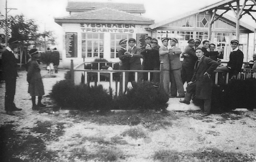
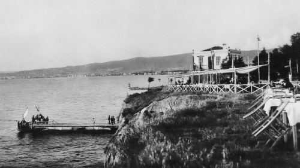
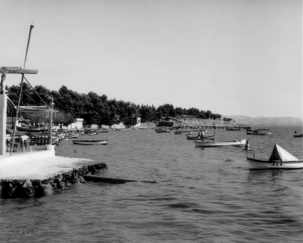
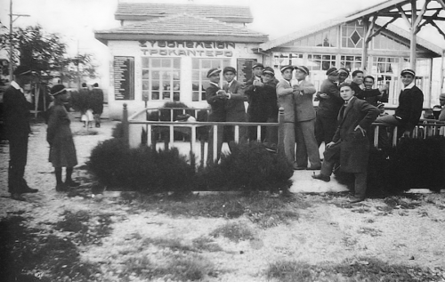
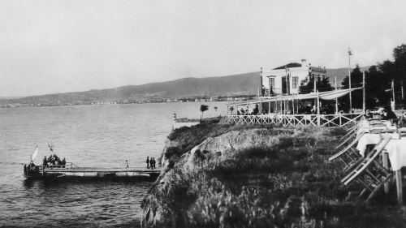
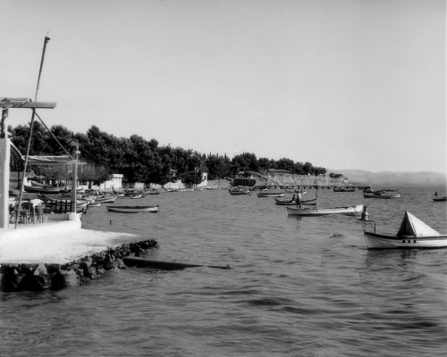

στο Ν° 59 της Εγνατίας το 1917.") 





ΦΑΓΗΤΟ
Απολαύστε το γεύμα σας σε διάφορα σημεία της πόλης και όλες τις εποχές .
CAFE
Αρωματικοί καφέδες σας περιμένουν να τους απολαύσετε! Συνδυάστε τον καφέ σας, με παραδοσιακά γλυκά του τόπου.
 ή Λουτρά Παράδεισος το 1917, στην Εγνατία στο ύψος της Αριστοτέλους.")
ΛΟΥΤΡΑ
Τα Λουτρά της Θεσσαλoνίκης σας παρέχουν άριστες υπηρεσίες για χαλάρωση, ευεξία, ξεκούραση.
ΔΙΑΣΚΕΔΑΣΗ
Η πόλη της Θεσσαλονίκης γνωστή για την νυχτερινή της ζωή και όχι μόνο. Διασκεδάστε με ταινίες του παγκόσμιου κινηματογράφου, παρακολουθήστε αθλητικούς αγώνες και διασκεδάστε
σε τοπικά πανηγύρια. Η Διεθνής Εκθεση Θεσσαλονίκης δεν είναι μόνο για εμπορικούς αντιπροσώπους αλλά και για όλη την οικογένεια.